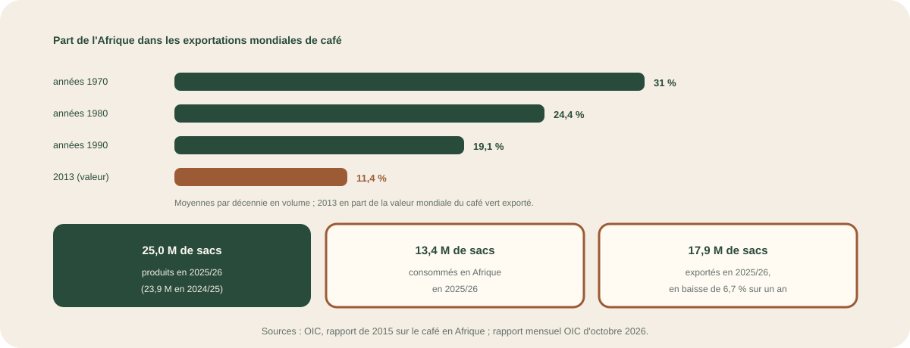
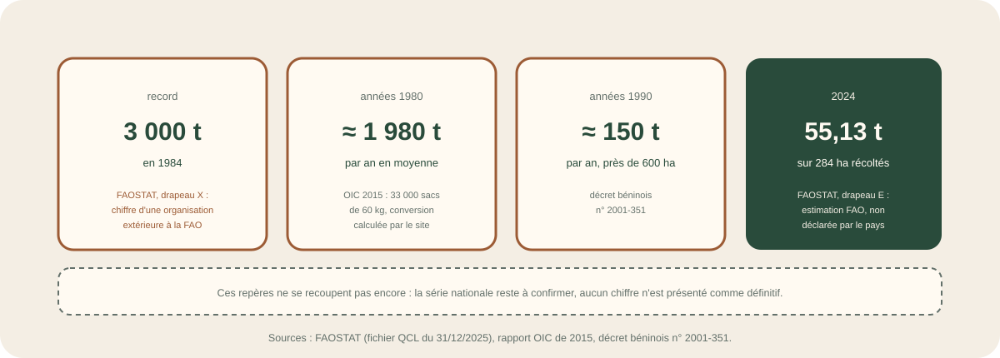
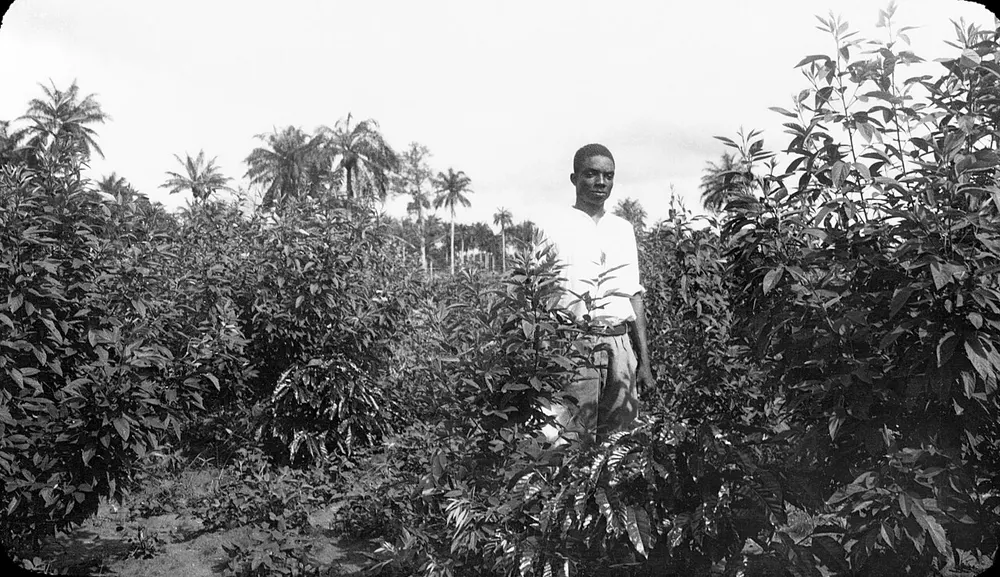
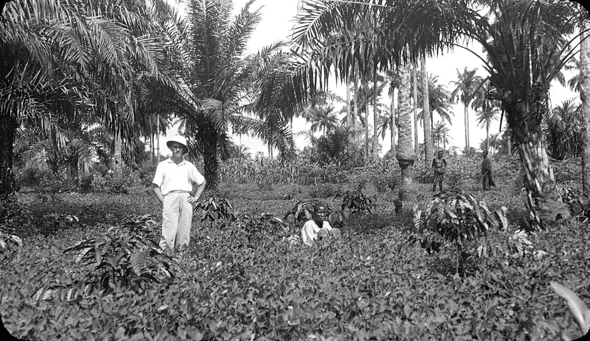
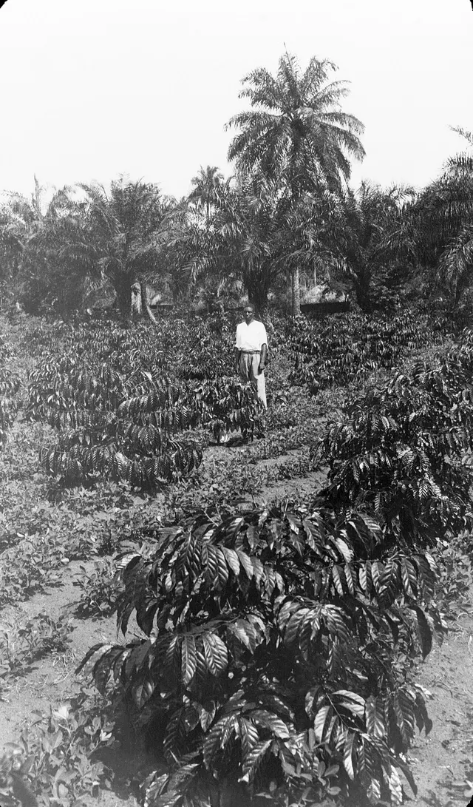
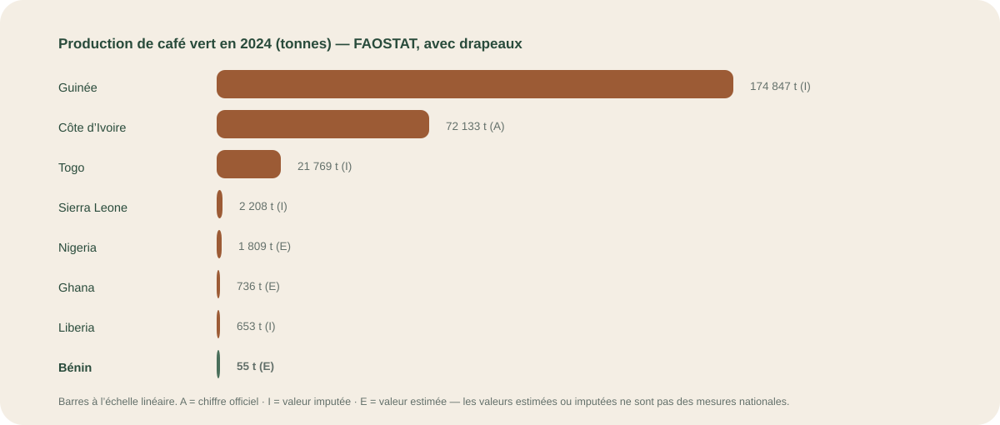
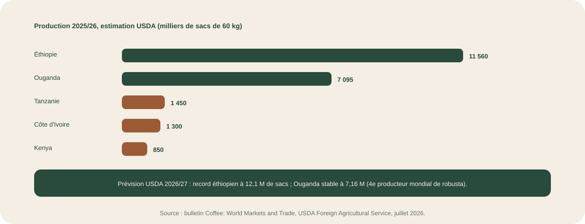

Afrique et Bénin
L’Afrique est le berceau de l’arabica et du robusta. Cette page réunit des repères sourcés pour l’Afrique, le Bénin et l’Afrique de l’Ouest ; les chiffres béninois restent à confirmer.
L’essentiel en trois points
- Afrique : berceau de l’arabica et du robusta [1], le continent produit 25,0 millions de sacs en 2025/26 (OIC, octobre 2026) [2].
- Bénin : 55,13 t de café vert en 2024 dans FAOSTAT, valeur estimée par la FAO (drapeau E), à confirmer auprès de la statistique béninoise [3] ; membre fondateur de l’IACO en 1960, sous le nom de Dahomey [1].
- Afrique de l’Ouest : la Côte d’Ivoire revient à 1,3 million de sacs en 2025/26 (USDA, juillet 2026) [4] ; la Guinée y était le deuxième producteur dans les moyennes 2010/11–2013/14 de l’OIC [5].
Approfondir
Touchez un titre pour ouvrir ou fermer la rubrique.
L’Afrique, berceau du café
L’Afrique est le continent d’origine des deux espèces de café cultivées dans le monde, l’arabica et le robusta [1]. En 2025/26, le continent produit 25,0 millions de sacs de 60 kg, après 23,9 millions en 2024/25, et il en consomme 13,4 millions [2]. Ses exportations, toutes formes confondues, atteignent 17,9 millions de sacs en 2025/26, en baisse de 6,7 % sur un an : toutes les grandes origines africaines reculent, l’Éthiopie le plus fortement (−8,3 %) [2].
Ce poids a longtemps été plus grand : l’Afrique représentait en moyenne 31 % des exportations mondiales dans les années 1970, 24,4 % dans les années 1980 et 19,1 % dans les années 1990. En 2013, ses exportations de café vert valaient 1,8 milliard de dollars sur un total mondial de 15,9 milliards, soit 11,4 % de la valeur, contre 21 % en 1990 [5].
L’Alliance interafricaine du café (IACO) porte cette filière : organisation intergouvernementale créée le 7 décembre 1960 à Antananarivo par onze pays producteurs, dont le Dahomey, aujourd’hui Bénin, elle réunit 25 pays membres et se donne pour mission de servir les intérêts du café africain et de faire reconnaître ses cafés dans le monde [1].

Bénin : chiffres à confirmer
Dans FAOSTAT (fichier QCL du 31 décembre 2025), la production béninoise de café vert est de 55,13 t en 2024 (55,00 t en 2021, 55,30 t en 2022, 55,09 t en 2023), sur 284 ha récoltés, soit 194,5 kg/ha ; toutes les valeurs 2016–2024 portent le drapeau E, valeur estimée par la FAO, et non une statistique nationale déclarée [3]. Le même fichier donne un record de 3 000 t en 1984 (drapeau X : chiffre d’une organisation extérieure à la FAO) [3] ; des sites secondaires reprennent ces séries [6] [7]. Le bulletin national de la Direction de la Statistique Agricole sur la campagne 2023-2024 présente notamment l’anacarde (203 844 t) mais ne contient pas de ligne consacrée au café : la série nationale du café n’a donc pas pu être recoupée dans ce document [8]. Le rapport OIC de 2015 (source primaire) donne pour le Bénin une production moyenne de 33 000 sacs de 60 kg dans les années 1980 (soit environ 1 980 t, calcul du site) et aucune production enregistrée dans les années 1990, 2000 et en 2013/14 [5] ; un site secondaire reprend ce constat [9]. Le décret béninois n° 2001-351 décrit pour sa part, dans les années 1990, environ 150 t par an sur près de 600 ha et des exportations contrôlées de 32,6 t (1991) à 1 850,8 t (1996), ces pics étant attribués en partie à la contrebande de production voisine [10]. Ce ne sont pas les mêmes mesures que les moyennes décennales de l’OIC (un « 0 » en milliers de sacs peut être un arrondi ou une absence d’enregistrement) : on ne peut pas parler de contradiction, mais le décret atteste une activité caféière que l’OIC ne montre pas à son niveau d’arrondi. Pour le chiffre récent, 2013/14 (OIC) et 2024 (FAOSTAT) sont à comparer : à confirmer auprès de FAOSTAT, de l’OIC et de la Direction de la Statistique Agricole.
Une rencontre entre l’Alliance interafricaine du café (IACO) et le gouvernement du Bénin a porté sur le développement de la filière nationale [11].
Ouvrir le dossier Bénin complet →

Archives photographiques : caféiers à Zagnanado (vers 1930)
Trois photographies d’archives montrent des plantations de caféiers à Zagnanado, au Dahomey, nom que portait alors le territoire de l’actuel Bénin. Elles sont attribuées au photographe Jean Duprez et conservées par la Bibliothèque nationale de France ; Wikimedia Commons les date de 1930 et les indique dans le domaine public [12]. Les légendes reprennent les titres de la BnF. Ce sont des documents historiques : ils ne renseignent ni les volumes ni la qualité du café d’aujourd’hui.






Afrique de l’Ouest
L’Afrique de l’Ouest est une terre de robusta. La Côte d’Ivoire en est le leader historique : 7,1 % des exportations mondiales dans les années 1970, troisième exportateur africain de la décennie 2010 avec 13,4 % des exportations du continent [5], et de retour à 1,3 million de sacs en 2025/26 selon l’USDA [4]. Dans la sous-région, les mouvements coopératifs sont relativement récents [5] ; la recherche ivoirienne (CNRA) figure parmi les institutions africaines qui ont mis au point des caféiers à haut rendement et résistants aux maladies, dont la diffusion aux producteurs reste limitée [5]. La consommation progresse aussi sur place : la Côte d’Ivoire compte parmi les pays africains où elle est en forte hausse [5].
Repères chiffrés : moyennes des campagnes 2010/11 à 2013/14, tableau 7 du rapport OIC de 2015 (production moyenne, superficie, rendement). Ce sont des moyennes publiées en 2015, pas des chiffres actuels [5].
| Pays | Production (milliers de sacs de 60 kg) | Superficie (ha) | Rendement (kg/ha) |
|---|---|---|---|
| Côte d’Ivoire | 1 753 | 360 000 | 292 |
| Guinée | 374 | 46 000 | 488 |
| Togo | 125 | 40 000 | 188 |
| Sierra Leone | 61 | 15 000 | 245 |
| Ghana | 58 | 15 000 | 233 |
| Nigeria | 43 | 50 000 | 51 |
| Liberia | 10 | 2 000 | 306 |
| Bénin | 0 | 15 000 | 0 |
Lecture : la Guinée est, dans ce tableau, le deuxième producteur ouest-africain derrière la Côte d’Ivoire, avec le rendement le plus élevé de la sous-région ; le « 0 » du Bénin peut être un arrondi ou une absence d’enregistrement à cette échelle, pas nécessairement une absence de production (voir la rubrique Bénin). Pour les années récentes, la Guinée, la Sierra Leone et le Togo figurent parmi les pays suivis par l’USDA mais sans ligne dans son tableau récapitulatif, et le Ghana, le Nigeria et le Liberia n’y sont pas cités [4] : la nouvelle rubrique « données récentes et fiches pays » apporte des valeurs FAOSTAT 2024 séparées, avec leurs drapeaux et limites [13]. La base de l’OIC reste une piste de recoupement [14]. Le Cameroun, souvent rattaché à l’Afrique centrale, est présenté dans la rubrique « Autres pays africains ».
Afrique de l’Ouest : données récentes et fiches pays
Les chiffres ci-dessous proviennent du fichier intégral FAOSTAT QCL, version mise à jour le 31 décembre 2025, relu le 21 novembre 2026 : produit 656, café vert, années civiles 2022 à 2024 [13]. Ils ne décrivent ni la campagne 2025/26 ni une prévision pour 2026. Les drapeaux font partie de la donnée : A = chiffre officiel ; E = valeur estimée ; I = valeur imputée par un organisme destinataire ; X = chiffre fourni par une organisation extérieure [13]. Une valeur estimée ou imputée ne doit pas être présentée comme une mesure nationale récente.

| Pays | Production (t) | Surface récoltée (ha) | Rendement (kg/ha) |
|---|---|---|---|
| Côte d’Ivoire | 72 133 (A) | 599 673 (I) | 120,30 (E) |
| Guinée | 174 847,18 (I) | 445 086 (I) | 392,80 (E) |
| Togo | 21 769,41 (I) | 42 200 (I) | 515,90 (E) |
| Sierra Leone | 2 208,05 (I) | 1 499 (I) | 1 472,70 (E) |
| Ghana | 736 (E) | 460 (E) | 1 600 (E) |
| Nigeria | 1 808,66 (E) | 1 379 (E) | 1 312 (E) |
| Liberia | 653,22 (I) | 2 753 (I) | 237,30 (E) |
| Bénin | 55,13 (E) | 284 (E) | 194,50 (E) |
Sur téléphone, faites défiler le tableau horizontalement pour lire toutes les colonnes. Ouvrez ensuite une fiche pays.
Côte d’Ivoire : données et limites
Production de café vert : 2022, 89 878 (A) t ; 2023, 46 975 (A) t ; 2024, 72 133 (A) t [13].
La production 2024 porte le drapeau A, mais la surface est imputée et le rendement estimé. Le bulletin USDA de juillet 2026 donne séparément 650 000 sacs en 2024/25 et 1,3 million en 2025/26 [4]. Ne pas raccorder directement tonnes annuelles FAOSTAT et sacs par campagne USDA.
À documenter : validation nationale récente, régions de production, espèces cultivées, transformation, prix aux producteurs et acteurs vérifiés. Ces champs ne sont pas remplis avec les données d’un pays voisin.
Guinée : données et limites
Production de café vert : 2022, 261 645 (A) t ; 2023, 200 000 (X) t ; 2024, 174 847,18 (I) t [13].
Écart majeur entre sources : FAOSTAT donne 174 847,18 t en 2024 (I), alors que l’OIC donnait une moyenne de 374 000 sacs, soit 22 440 t après conversion, pour 2010/11–2013/14 [5]. Les périodes diffèrent, mais cela ne suffit pas à expliquer cet écart. La surface FAOSTAT 2024 (445 086 ha, I) diffère aussi des 46 000 ha du tableau OIC ancien. Aucun taux de croissance ni classement récent n’est déduit de ces séries avant recoupement national.
À documenter : validation nationale récente, régions de production, espèces cultivées, transformation, prix aux producteurs et acteurs vérifiés. Ces champs ne sont pas remplis avec les données d’un pays voisin.
Togo : données et limites
Production de café vert : 2022, 25 132 (A) t ; 2023, 22 619,45 (I) t ; 2024, 21 769,41 (I) t [13].
La production et la surface 2024 sont imputées, le rendement estimé. Les 40 000 ha du tableau OIC ancien et les 42 200 ha récoltés FAOSTAT ne portent ni la même période ni nécessairement la même définition [5]. Les rapprocher ne démontre pas une extension mesurée du verger.
À documenter : validation nationale récente, régions de production, espèces cultivées, transformation, prix aux producteurs et acteurs vérifiés. Ces champs ne sont pas remplis avec les données d’un pays voisin.
Sierra Leone : données et limites
Production de café vert : 2022, 2 580 (X) t ; 2023, 2 333,16 (A) t ; 2024, 2 208,05 (I) t [13].
La production et la surface 2024 sont imputées, le rendement estimé. Les 1 499 ha récoltés FAOSTAT ne doivent pas être confondus avec une surface plantée totale. Le tableau OIC de 2015 donne d’autres surfaces selon ses tableaux, dont 15 000 ha au tableau 7 : périmètre à éclaircir [5].
À documenter : validation nationale récente, régions de production, espèces cultivées, transformation, prix aux producteurs et acteurs vérifiés. Ces champs ne sont pas remplis avec les données d’un pays voisin.
Ghana : données et limites
Production de café vert : 2022, 736 (E) t ; 2023, 736 (E) t ; 2024, 736 (E) t [13].
Les trois indicateurs 2024 sont estimés. La production et la surface sont identiques dans le fichier de 2018 à 2024 (736 t et 460 ha). Cette stabilité statistique ne prouve pas une stabilité observée sur le terrain. Les anciennes estimations OIC sont très différentes : aucune évolution de long terme n’est calculée [5].
À documenter : validation nationale récente, régions de production, espèces cultivées, transformation, prix aux producteurs et acteurs vérifiés. Ces champs ne sont pas remplis avec les données d’un pays voisin.
Nigeria : données et limites
Production de café vert : 2022, 1 819,02 (E) t ; 2023, 1 808,01 (E) t ; 2024, 1 808,66 (E) t [13].
Les trois indicateurs 2024 sont estimés. Les 1 379 ha récoltés du fichier FAOSTAT sont très éloignés des surfaces anciennes de l’OIC, qui varient elles-mêmes selon les tableaux [5]. Ces séries sont conservées comme données de sources différentes, sans les fusionner.
À documenter : validation nationale récente, régions de production, espèces cultivées, transformation, prix aux producteurs et acteurs vérifiés. Ces champs ne sont pas remplis avec les données d’un pays voisin.
Liberia : données et limites
Production de café vert : 2022, 655,85 (I) t ; 2023, 654,58 (I) t ; 2024, 653,22 (I) t [13].
La production et la surface 2024 sont imputées, le rendement estimé. L’OIC donnait une moyenne de 10 000 sacs pour 2010/11–2013/14 [5], soit 600 t après conversion du site. La proximité avec FAOSTAT ne valide pas pour autant une continuité statistique.
À documenter : validation nationale récente, régions de production, espèces cultivées, transformation, prix aux producteurs et acteurs vérifiés. Ces champs ne sont pas remplis avec les données d’un pays voisin.
Bénin : données et limites
Production de café vert : 2022, 55,30 (E) t ; 2023, 55,09 (E) t ; 2024, 55,13 (E) t [13].
Les trois indicateurs 2024 sont estimés. Le dossier Bénin confronte cette série aux archives, au décret de 2001 et aux publications agricoles nationales, sans affirmer de zones de culture actuelles. Lire le dossier Bénin et ses limites.
À documenter : validation nationale récente, régions de production, espèces cultivées, transformation, prix aux producteurs et acteurs vérifiés. Ces champs ne sont pas remplis avec les données d’un pays voisin.
Périmètre : ces huit fiches couvrent les pays du tableau OIC ouest-africain reproduit plus haut, pas tous les États de la région. L’absence d’un autre pays dans ce tableau ne signifie pas absence de café, de commerce ou de consommation. Les chiffres historiques restent visibles et séparés. Une tonne équivaut à 1 000 kg ; un sac statistique à 60 kg. Les conversions sont des calculs du site, pas une nouvelle observation.
Éthiopie, berceau de l’Arabica
L’Éthiopie a enregistré la croissance la plus dynamique de la production africaine : +2,7 % par an en moyenne sur 43 ans, et +5,5 % par an depuis 1990 (rapport OIC de 2015) [5].
Ouganda
La production ougandaise a baissé de 6,8 % en 2022/23 à 5,6 millions de sacs (6,0 en 2021/22) [15]. Bulletin USDA de juillet 2026 : 7,095 millions de sacs en 2025/26 (robusta 5,975 M, arabica 1,12 M) et 7,16 M prévus pour 2026/27 ; l’Ouganda est le 4e producteur mondial de robusta dans ce tableau, derrière le Vietnam, le Brésil et l’Indonésie [4].
Producteurs africains : repères USDA 2025/26
Bulletin Coffee: World Markets and Trade de l’USDA (Foreign Agricultural Service), juillet 2026, tableau « Coffee Summary », production totale en milliers de sacs de 60 kg ; le bulletin donne aussi 2021/22 à 2023/24. 2025/26 est l’estimation du bulletin et 2026/27 sa prévision ; chaque pays suit sa propre année de commercialisation : octobre à septembre pour l’Éthiopie, l’Ouganda, la Côte d’Ivoire et le Kenya, juillet à juin pour la Tanzanie [4].
| Pays | 2024/25 | 2025/26 | 2026/27 (prév.) |
|---|---|---|---|
| Éthiopie | 11 460 | 11 560 | 12 100 |
| Ouganda | 6 700 | 7 095 | 7 160 |
| Côte d’Ivoire | 650 | 1 300 | 1 300 |
| Tanzanie | 1 350 | 1 450 | 1 600 |
| Kenya | 950 | 850 | 950 |
L’USDA prévoit pour l’Éthiopie un record de 12,1 millions de sacs en 2026/27, grâce à des surfaces et des rendements plus élevés, avec des exportations de café vert prévues à 7,1 millions de sacs [4]. Le Cameroun, le Togo, le Rwanda et le Burundi figurent dans la liste des pays producteurs suivis par l’USDA (années de commercialisation : octobre à septembre pour le Cameroun et le Togo ; avril à mars pour le Rwanda et le Burundi), mais n’ont pas de ligne dédiée dans ce tableau [4]. Pour ces pays, les repères sourcés restent ceux de l’OIC de 2015 présentés ci-dessous, qui ne sont pas des chiffres actuels [5]. Le Ghana n’est pas cité dans ce bulletin ; sa fiche ci-dessus apporte une série FAOSTAT distincte, estimée [13].

Autres pays africains
Données de l’OIC, rapport ICC-114-5 de 2015 (annexe, tableaux 1 et 3) : production moyenne par décennie et estimation 2013/14, en milliers de sacs de 60 kg ; nombre de producteurs et superficie estimés. Le rapport est publié en 2015 ; l’année d’observation des producteurs et superficies n’est pas précisée, et la production 2013/14 est une estimation. Ce ne sont pas des chiffres actuels [5].
| Pays | Années 1980 | Années 2000 | 2013/14 (estim.) | Producteurs | Superficie (ha) |
|---|---|---|---|---|---|
| Côte d’Ivoire | 4 338 | 2 692 | 2 100 | 650 000 | 360 000 |
| Cameroun | 1 771 | 834 | 315 | 650 000 | 140 000 |
| Tanzanie | 875 | 793 | 799 | 900 000 | 229 000 |
| Kenya | 1 726 | 766 | 750 | 700 000 | 160 000 |
| Rwanda | 583 | 314 | 246 | 700 000 | 42 000 |
| Burundi | 526 | 312 | 161 | 600 000 | 60 000 |
| Togo | 251 | 143 | 100 | 62 282 | 37 768 |
| Ghana | 12 | 29 | 60 | 4 182 | 35 000 |
| Bénin | 33 | 0 | 0 | 8 000 | 15 000 |
Lecture : les chiffres sont recopiés tels que publiés ; la superficie du Ghana (35 000 ha pour 4 182 producteurs) semble atypique et n’est pas vérifiée ailleurs. Pour les années récentes, consulter la base de l’OIC [14]. Les fiches détaillées par pays restent à documenter.
Chiffres récents (USDA)
Le bulletin USDA FAS de juillet 2026 donne la production totale (arabica et robusta) en milliers de sacs de 60 kg. Les années sont celles du tableau « Coffee Summary » (page 7, en-têtes relus sur la page) ; la dernière colonne est étiquetée « Jul 2026/27 », la prévision de juillet 2026. Les années sont des campagnes commerciales propres à chaque pays, pas des années civiles, et le bulletin révise ses chiffres d’une édition à l’autre : par exemple la Côte d’Ivoire 2024/25 est à 650 dans cette édition [4].
| Pays | 2023/24 | 2024/25 | 2025/26 | 2026/27 (prévision de juillet 2026) |
|---|---|---|---|---|
| Éthiopie | 9 130 | 11 460 | 11 560 | 12 100 |
| Ouganda | 6 400 | 6 700 | 7 095 | 7 160 |
| Tanzanie | 1 350 | 1 350 | 1 450 | 1 600 |
| Côte d’Ivoire | 1 325 | 650 | 1 300 | 1 300 |
| Kenya | 825 | 950 | 850 | 950 |
Cameroun, Rwanda, Burundi, Togo, Ghana et Bénin ne figurent pas dans ce tableau USDA : une série FAOSTAT 2024 distincte est ajoutée ci-dessus pour le Togo, le Ghana et le Bénin [13] ; le recoupement OIC reste à faire [14].
Image d’en-tête : illustration générée pour le site, à valeur éditoriale, pas un document photographique. Les autres visuels de la page portent leur propre crédit en légende.
Termes du dictionnaire
Références
Les affirmations renvoient aux références numérotées ci-dessous, avec leur date de consultation. Les rubriques marquées « à documenter » n’ont pas encore de source vérifiée et n’affirment rien. Certaines sources sont secondaires : leur nature est indiquée dans leur intitulé.
- IACO, « IACO at a glance » (site officiel) : création le 7 décembre 1960 à Antananarivo, pays membres, vision et mission · consulté le 21 novembre 2026
- OIC, Coffee Market Report, octobre 2026 (rapport mensuel, statistiques de l’année caféière 2025/26) · consulté le 20 novembre 2026
- FAOSTAT, Production de cultures et produits animaux (QCL), fichier normalisé mis à jour le 31 décembre 2025, café vert, Bénin · consulté le 20 novembre 2026
- USDA FAS, Coffee: World Markets and Trade (juillet 2026) · consulté le 20 novembre 2026
- OIC (2015), Overview of the coffee sector in Africa (ICC-114-5) · consulté le 20 novembre 2026
- Waramina, production de café au Bénin (série FAOSTAT, reprise secondaire) · consulté le 20 novembre 2026
- Terra Cultiva, café vert au Bénin (série FAOSTAT, reprise secondaire) · consulté le 20 novembre 2026
- DSA / MAEP (mars 2024), Les chiffres définitifs de la campagne agricole 2023-2024 (publié sur le site de l’INStaD) · consulté le 20 novembre 2026
- Beanesis, café du Bénin (données OIC citées, reprise secondaire) · consulté le 20 novembre 2026
- Décret n° 2001-351, transmission à l’Assemblée nationale de l’Accord international de 2001 sur le café (Bénin, SGG), pages 2 et 3 · consulté le 20 novembre 2026
- IACO, rencontre avec le gouvernement du Bénin sur la filière café · consulté le 20 novembre 2026
- Jean Duprez (vers 1930), photographies de plantations de caféiers à Zagnanado (Dahomey, aujourd’hui Bénin), Bibliothèque nationale de France, via Wikimedia Commons · consulté le 20 novembre 2026
- FAOSTAT QCL, fichier intégral normalisé du 31 décembre 2025 : café vert, pays ouest-africains, années 2022–2024 et dictionnaire des drapeaux · consulté le 21 novembre 2026
- OIC, base de données statistiques mondiales du café · consulté le 20 novembre 2026
- OIC, Coffee Report and Outlook, décembre 2023 · consulté le 20 novembre 2026
Révision éditoriale : . Les dates et limites des données restent celles indiquées dans leurs sources.